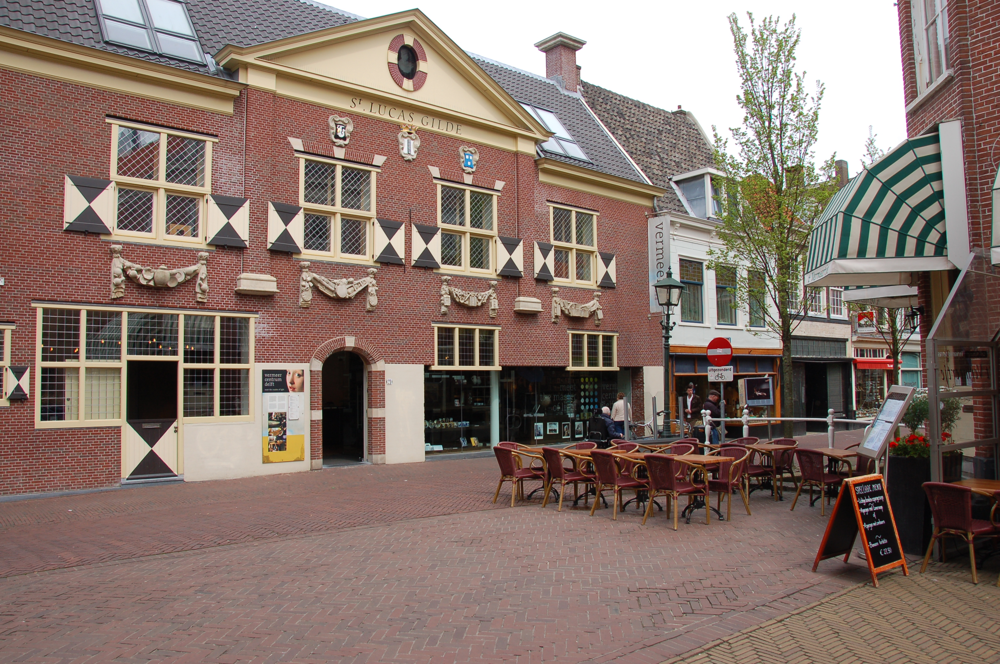

Te doen in de omgeving van het park
Ons park is 32 kilometer verwijderd van de prachtige stad Delft waar ook zeer veel te beleven is. Hier zijn een aantal van die opties:
Royal Delft - Koninklijke Porceleyne Fles
De Koninklijke Porceleyne Fles, is de laatste overgebleven Delfts aardewerkfabriek uit de 17e eeuw. Bezoek Royal Delft en zie hoe ze hier nog steeds op een authentieke wijze produceren!
Nieuwe Kerk
Midden op de Markt in Delft vindt u de Nieuwe Kerk. Deze kerk stamt uit het jaar 1300 en is bekend vanwege het praalgraf van Willem van Oranje en koninklijke grafkelder waar de meeste leden van de Nederlandse Koninklijke Familie worden bijgezet.
Museum Prinsenhof Delft
Nederland ontdek je in Delft. In Museum Prinsenhof Delft, een uniek monumentaal gebouw en voormalig Hof van Willem van Oranje, beleef je de Nederlandse geschiedenis.

Vermeer Centrum Delft
Het Vermeer Centrum Delft biedt een ontdekkingstocht door het leven, het werk en de stad van de 17de-eeuwse meester van het licht: Johannes Vermeer.

Zee
30 minuten rijden naar het strand

Den Hoorn
6 kilometer weg van het dorp Den Hoorn